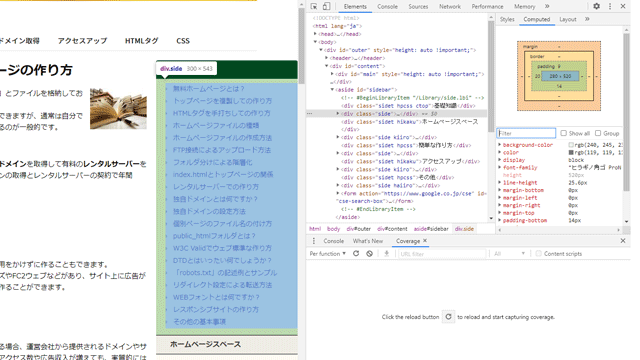
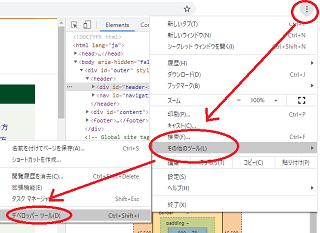
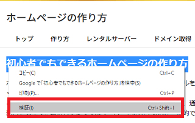
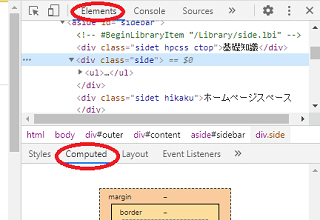
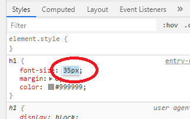
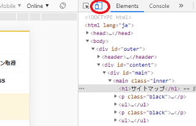
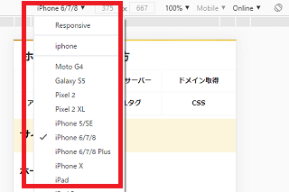
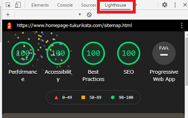

CSSの確認はChromeデベロッパーツールが便利
ホームページのCSSを簡単にチェックしたい場合、ブラウザのChromeに搭載されているデベロッパーツールを使用すると便利です。
デベロッパーツールを使えば、その要素のフォントや文字の大きさ、marginやpadding、あるいはレイアウト構成などを簡単に調べることができます。

このデベロッパーツールは、Chromeのデフォルトで利用できる機能のため、拡張機能として別途にインストールする必要はありません。
Chromeを使用していれば、そのまま利用することができます。
→ Google Chrome
また、レスポンシブウェブデザインでスマートフォンに最適化する際も、主要な機種ごとに表示を確認できるので便利です。
Chromeデベロッパーツールの使い方
使い方については、まずはChromeで調べたいページを表示させたのち、「右上の縦３点リーダー」→「その他のツール」→「デベロッパーツール」の順に選択してツールを起動します。

もしくは、調べたい箇所を選択したのち、「右クリック」→「検証」を選択することでも利用することができます。

次に、「Elements」にて調べる要素を選択したのち、「Styles」や「Computed」の箇所で確認することができます。

■「Styles」と「Computed」の違い
「Styles」ではその要素のCSSが表示されますが、「Computed」の箇所では最終的に適用された結果が表示されます。このcomputeは計算するという意味になりますが、その要素で適用されているフォントや実際の値などをチェックすることができます。
例えば、「Styles」の箇所で2emなどとなっていた場合、「Computed」の箇所ではこの2emが計算されて32pxなどと表示されるはずです。
また、「Styles」の箇所では要素の値を変更することもできます。

フォントサイズなどの入力した値がリアルタイムで反映されますので、実際の表示を確認しながら変更したい場合は「Styles」を利用するとよいでしょう。
レスポンシブウェブデザインの確認方法
サイトをレスポンシブウェブデザインでスマートフォンに最適化している場合、主要な機種ごとに表示を確認することができます。
「Elements」の横にスマホのマークがありますが、こちらでスマホやタブレット端末での表示を確認することができます。

以下のような機種を選択する箇所があるため、それぞれ正常に表示されるかをチェックしておきます。

特にユーザー数の多い「iPhone 5/SE」、「iPhone 6/7/8」、「iPad」については、重点的にチェックしておくとよいかもしれません。
ただし、アドセンス広告などを利用している場合はリロードしないと正常に表示されないため、掲載していないページで確認することをおすすめします。
Lighthouseでホームページの品質をチェック
そのほか、Lighthouseの箇所からホームページの品質をチェックすることができます。

「Device」の箇所で「Mobile」と「Desktop」がありますが、モバイルファーストインデックスに移行している場合は「Mobile」を重点的にチェックした方がよいでしょう。
「パフォーマンス」については、広告などのサードパーティーも関係してくるため、自サイトのみでは対応しきれない部分があるかと思いますが、改善点があれば修正していくことをおすすめします。
これらはユーザーエクスペリエンスを測定する際の指標になりますので、問題点を修正することでユーザー体験が向上するはずです。
例えば、「サイトの表示が速いか」や「クリックした時の反応がよいか」、あるいは広告の表示などで「コンテンツがあっちこっち動きまわらないか」などを測定することができます。いわゆるCore Web Vitals（コアウェブバイタル）と呼ばれるものですが、これらの品質を改善することで滞在時間やページビューなどが向上するはずです。
当サイトではダウンロードサイズを抑えるため、画像の圧縮やWebフォントのサブセット化、あるいは.htaccessによるブラウザキャッシュの設定などをしていますが、自サイトでは問題なくても広告の画像やWEBフォントでひっかかるかもしれません。
そのほか、「アクセスビリティー」や「ベストプラクティス」、「SEO」などについても、問題がある点については指摘してくれますので、それぞれ対応していけばよいと思います。